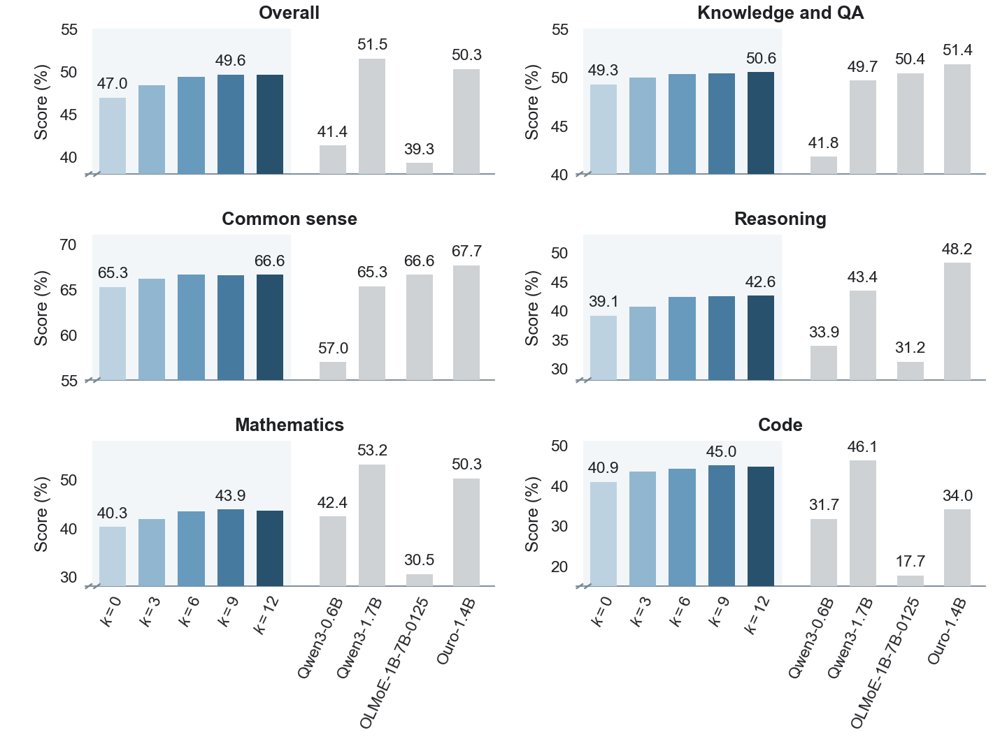
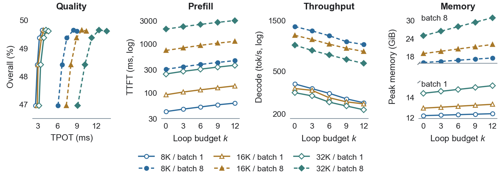
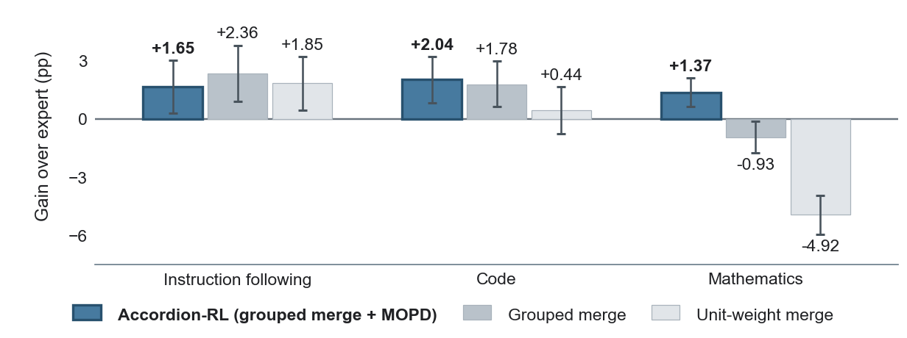

Highlights
Accordion-6B-A0.5B: a 24-layer MoE with 6.03B total and 0.54B active parameters, pretrained on 3.65T publicly available tokens with a 32K context.
Abstract
Large language models serve applications with diverse inference budgets, but training and maintaining separate models for each budget incurs substantial costs. Recent Looped Transformers enable flexible inference computation through parameter reuse, but maintaining strong performance across different inference budgets remains an open challenge. We introduce Accordion, a mixture-of-experts-based model that supports five inference budgets through fixed-prefix layer looping. Each budget follows a pre-defined execution path, while the minimum budget retains the unlooped model. Joint pretraining samples one budget per micro-batch and optimizes its next-token prediction loss without additional cross-budget consistency objectives. We further preserve these inference budgets through supervised fine-tuning and reinforcement learning, where parameter-group merging and budget-matched multi-teacher on-policy distillation integrate three domain experts into one model. After 3.65T tokens of pretraining, increasing inference depth improves Accordion-6B-A0.5B's average performance across 37 tasks by 2.65 percentage points, with the middle budget capturing 91% of this gain using half as many additional layer executions. The final model surpasses each domain expert on its corresponding task-and-budget average, while achieving strong instruction-following performance across all budgets and retaining depth-dependent gains in mathematical reasoning and code generation.
Pick a budget
Budget k runs the first k layers of the middle window (layers 7–18) twice in place. Every other layer runs once, and k = 0 is the ordinary unlooped model. The budget is fixed per request.
Deltas are relative to k = 0. Runtime measured on one H800 with Accordion-RL; quality evaluated separately.
Method
Layer looping, not whole-model recurrence: each selected layer repeats itself before handing off to the next, so every budget preserves the original layer order.

- Fixed prefix pathsBudget k ∈ {0, 3, 6, 9, 12} repeats layers 7 through 6 + k, giving 24 + k layer executions. Paths are deterministic, not input-dependent.
- Gated second passThe second execution adds tanh(g) ⊙ F(h) for attention and MoE. Gates start at zero, so the unlooped model is recovered at initialization.
- Single-trajectory trainingEach micro-batch samples one budget and optimizes its next-token loss. No cross-budget consistency loss and no extra forward passes.
Why a fixed prefix
Controlled experiments with 1.61B-parameter models and 80B training tokens.


Pretraining results
Accordion-Base after 3.65T tokens and 32K context extension, compared with public models under one common evaluation protocol on 37 tasks.

Quality versus inference cost

Longer contexts benefit more

Post-training results
All five budgets survive SFT and RL. Domain-specific RL trains instruction-following, mathematics and coding experts; parameter-group merging and budget-matched multi-teacher on-policy distillation (MOPD) fold them into one model, Accordion-RL.



BibTeX
@article{zhang2026accordion,
title = {Accordion: Elastic-Depth Inference via Fixed-Prefix Layer Looping},
author = {Zhang, Yudong and Ding, Wei and Zheng, Kaili and Zhang, Zhenyu and Ding, Yuchen and Wang, Yu},
journal = {arXiv preprint},
year = {2026}
}